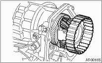

1. Install the center differential assembly with the shim(s).
NOTE:
Press-fit it to the bottom of bearing shoulder completely.

2. Insert the rear drive shaft assembly. 
3. Join the transmission case and the extension case, and then install the rear vehicle speed sensor.
4. Install the transmission assembly to the vehicle.